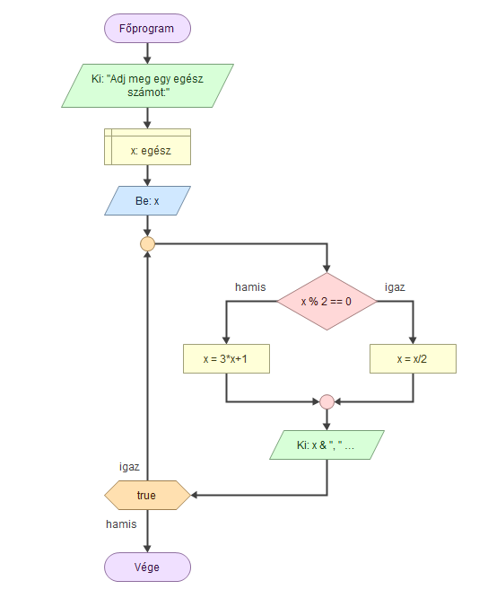

A Collatz-sejtés egy máig megoldatlan probléma a matematikában. Több más néven is ismert, például Ulam-sejtés vagy 3n+1 probléma. A sejtés a nevét Lothar Collatzról kapta, aki 1937-ben fogalmazta meg azt.
Tetszőleges pozitív egész számból kiindulva képezzünk végtelen sorozatot úgy, hogy ha a sorozat utoljára kiszámított eleme páros, akkor a rákövetkező elem ennek fele lesz, különben viszont a háromszorosánál eggyel nagyobb szám.

Ha a szám páros, oszd el 2-vel.
Ha a szám páratlan, szorozd meg 3-mal, majd adj hozzá 1-et.
➡️ Bármely pozitív egész számból indulva végül eljutsz az 1-hez.
Írj be egy számot: